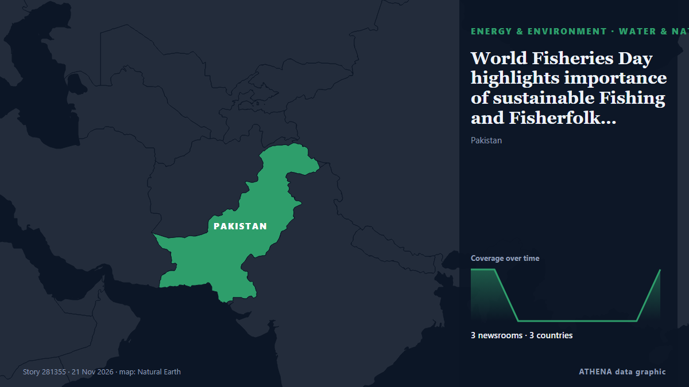

Ενέργεια, Πόροι & Περιβάλλον
ΧορηγούμενοΠαρουσιάζεται από  Cybernetics and Artificial Intelligence Lab Welcome to the Cybernetics and Artificial Intelligence Laboratory, established at the Department of Business Administration of the National and Kapodistrian University of Athens. The lab is headed by Professor Dimitrios Thomakos. The lab aims to do research that can be published in top venues. Our research uses tools and methods of Artificial Intelligence, and lies in the following areas: - Forecasting - Decision making - Cyber security - Finance We are always looking forward to collaborating with exceptional students!
Cybernetics and Artificial Intelligence Lab Welcome to the Cybernetics and Artificial Intelligence Laboratory, established at the Department of Business Administration of the National and Kapodistrian University of Athens. The lab is headed by Professor Dimitrios Thomakos. The lab aims to do research that can be published in top venues. Our research uses tools and methods of Artificial Intelligence, and lies in the following areas: - Forecasting - Decision making - Cyber security - Finance We are always looking forward to collaborating with exceptional students!
Οι τίτλοι των ειδήσεων παρουσιάζονται στα αγγλικά, όπως δημοσιεύτηκαν.

Νερό & φυσικοί πόροιWorld Fisheries Day highlights importance of sustainable Fishing and Fisherfolk livelihoods
By Zoila Palma: World Fisheries Day is being observed with renewed calls for responsible fishing practices, sustainable management of aquatic resources and improved working conditions for people… από Breaking Belize News
| 8 Νοε | 55 |
|---|---|
| 9 Νοε | 110 |
| 10 Νοε | 110 |
| 11 Νοε | 115 |
| 12 Νοε | 90 |
| 13 Νοε | 74 |
| 14 Νοε | 41 |
| 15 Νοε | 50 |
| 16 Νοε | 108 |
| 17 Νοε | 87 |
| 18 Νοε | 84 |
| 19 Νοε | 77 |
| 20 Νοε | 41 |
| 21 Νοε | 14 |
Saudi Arabia Agrees to Store Additional 16 Million Barrels of Crude in Japan
ISTANBUL: Japan has agreed to buy up to 8 million barrels of Saudi crude for its national petroleum reserve if market conditions are favourable, the two countries said Friday, Anadolu Ajansi… από New Straits Times
Nepal flood victims' families may wait up to a year for death certificates
KUALA LUMPUR: Families of Malaysians missing in the Nepal floods could face another three to 12 months, or longer, to obtain certificates of presumption of death, Malaysia Solidarity Families in Hope… από New Straits Times
6.7 magnitude earthquake hits central Peru
LIMA, Peru (AFP)—A 6.7-magnitude earthquake struck central Peru on Friday, the Peruvian Geophysical Institute reported, with a preliminary report indicating no fatalities or serious damage from the… από Jamaica Observer
Peru and Japan agree to strengthen El Niño preparedness and promote investment
Peru and Japan signed nine cooperation agreements aimed at strengthening the prevention and mitigation of the effects of the El Niño phenomenon, promoting new investments, expanding cooperation in… από Andina (English)
Iraq reopens key road linking Jurf al-Nasr to Karbala
Road reopens a day after Iraqi forces begin redeployment in Jurf al-Nasr amid security measures and investigations into suspected oil smuggling. από Anadolu Agency (English)
Fossil fuel row stalls COP31 climate deal
Its applications now extend well beyond hessian and sacks to biodegradable shopping bags, geotextiles for erosion control and coastal protection, automotive composites, and advanced materials such as… από The Business Standard (Bangladesh) (working feed)
Africa demands delivery on climate finance as COP31 closes
By Joyce Gyekye African countries have intensified calls for developed nations to honour their climate finance commitments, insisting that the outcome of COP31 must deliver concrete action on… από GBC Ghana Online
Countries race to secure COP31 deal after fossil fuel row
The COP31 climate talks have extended into Saturday as nations struggle to agree on a deal following the removal of fossil fuel references from draft texts, highlighting significant disagreements. από Arab News
COP31 in Antalya: five takeaways from the ‘implementation’ climate summit
After three decades of UN climate summits, and little progress on climate finance, this year’s meeting (COP31) in Turkey, is likely to be remembered less for what negotiators agreed than for the… από EUobserver
India 16 without loss in reply to New Zealand’s 368 in first test
New Zealand all-rounder Glenn Phillips secured his second test century with three runs. από SABC News
U.S. Holds Historic Deep-Sea Mining Lease Sale
The Trump administration on Thursday completed the first-ever U.S. offshore critical minerals lease auction, drawing $6 million in high bids for more than 31.5 million acres of seabed off American... από gCaptain
Solar panel, battery recycling offers $15B investment potential over 5 years: Int’l Solar Alliance chief
ISA Director General Ashish Khanna says 95% to 98% of solar panel and battery waste can be recycled. από Anadolu Agency (English)
Clean energy choices shape environmental impacts beyond greenhouse gas emissions
The burning of fossil fuels such as coal, gas and oil is the primary driver of climate change, but clean energy strategies to achieve net-zero greenhouse gas emissions do not systematically alleviate… από Phys.org
Oruç Reis: Pakistan holds $8-10 trillion in natural resources, says Dar
Pakistan, sitting on natural resources estimated to be worth $8-10 trillion, took a major step on Friday to unlock its offshore energy wealth as the Turkish seismic vessel Oruç Reis arrived at… από Business Recorder
Kenya investigates deaths of seven hippos
In one case, a post-mortem of a young female hippo suggested it had ingested synthetic fishing nets. από The Straits Times
Gulf Sees Iran Oil Movement as US Widens Blockade
A cargo of Iranian crude was transferred between two tankers in the Persian Gulf this week, as the US warned its forces could target vessels that carry out the practice while enforcing a maritime… από Rigzone
Meta says 'reevaluating' 2030 net zero target amid AI buildout
Meta executives said rising complexity and the need to build AI infrastructure had made progress towards its net zero goal more challenging. από Free Malaysia Today
Mideast crisis ‘largest threat’ to energy security ever: IEA
The crisis in the Middle East sparked in February by the US and Israeli bombing of Iran has created the "largest threat" to energy security in history, the International Energy Age... από Oman Observer
US army postpones plan to detonate bomb-making chemical amid outcry
Controlled detonation could lead to plume containing lead particles, worrying residents and state officials The US army has delayed its plan to detonate a stash of bomb-making chemicals in… από The Guardian
Drone attack reported on Kaleykino oil pumping station in Russia's Tatarstan
Residents of Almetyevsk in Russia's Tatarstan region recorded flashes near the village of Kaleykino, where an oil pumping station of the Russian trunk oil pipeline system of the same name is located. από Ukrinform (English)
Musadik Malik arrives in New Delhi to attend SCO dialogue forum
Minister for Climate Change and Environmental Coordination Dr Musadik Malik arrived in New Delhi on Friday to attend the SCO Civilisational Dialogue Forum. από Dawn
Oil prices gain as Houthi attacks on Riyadh raise supply concerns
Brent crude futures are up US$0.79, or 0.9%, at US$92.77 a barrel. από The Business Times
US sells first deep-sea mining leases off American Samoa, days after court ruled against process
The Trump administration pressed ahead with the auction despite a federal judge’s finding that regulators broke wildlife protection law and conservation groups vowed to have the leases voided. από Euronews English
Xi wants stronger bonds with Australia as Albanese defends Putin rebuke
“I made very clear to President Putin directly yesterday that he needs to stop his war, and he needs to stop it now,” Albanese said. από Sydney Morning Herald
Ibaizabal, TotalEnergies name LNG bunkering vessel in China
Spanish shipowner Ibaizabal and French energy giant TotalEnergies have named the first of two 18,600-cbm LNG bunkering vessels at China's Hudong-Zhonghua. από LNG Prime
Cyclone Akvan LIVE: Storm likely to make landfall near Odisha's Gopalpur tomorrow; 3 Andhra districts on red alert
Cyclone Akvan LIVE: Severe cyclonic storm Akvan is likely to move north-northwestward and cross north Andhra Pradesh and Yanam and south Odisha coasts between Narsapur-Puri, close to east of… από Hindustan Times
US-led consortium wins Kenya’s Mrima Hill mineral tender
Frontier Minerals Consortium, Fangda Special Steel and Sinohydro selected for strategic mineral projects in Kwale, Samburu and Tharaka Nithi. από Capital FM Kenya
Survivors of Uganda's deadly landslide seek justice at the UN
Survivors reject relocation plans they say ignore their safety, land rights and livelihoods. από BBC News
PACNEWS THREE, 20 NOVEMBER 2026
In this bulletin: 1. PACIFIC — Australia urges COP31 to keep 1.5°C target alive as negotiations enter final stage2. από Islands Business (Fiji)
Everllence secures first order for methane dual-fuel 8S50ME-GI Mk10.7 engine
Everllence has announced it has won the first order for its methane dual-fuel, two-stroke 8S50ME-GI Mk10.7 engine configuration. από Bunkerspot
Jotun to supply coatings for Knutsen’s LNG carrier series
Norway-based Jotun has been selected to supply marine coatings for a series of nine new LNG carriers for Knutsen. από Bunkerspot
Weatherford wins Constellation deepwater MPD contract in Brazil
Constellation has awarded Weatherford a deepwater managed pressure drilling contract for a frontier exploration campaign offshore Brazil using the Amaralina Star drillship, Weatherford’s second… από World Oil
Heavy rain hits Ras Al Khaimah and Fujairah as UAE issues weather alerts
Downpours across northern and eastern regions prompt flash flood warnings. από News of Bahrain
Data centers to increase emissions: IEA
According to International Energy Agency (IEA), electricity consumption by AI datacentres are likely to double in next four years. από Livemint